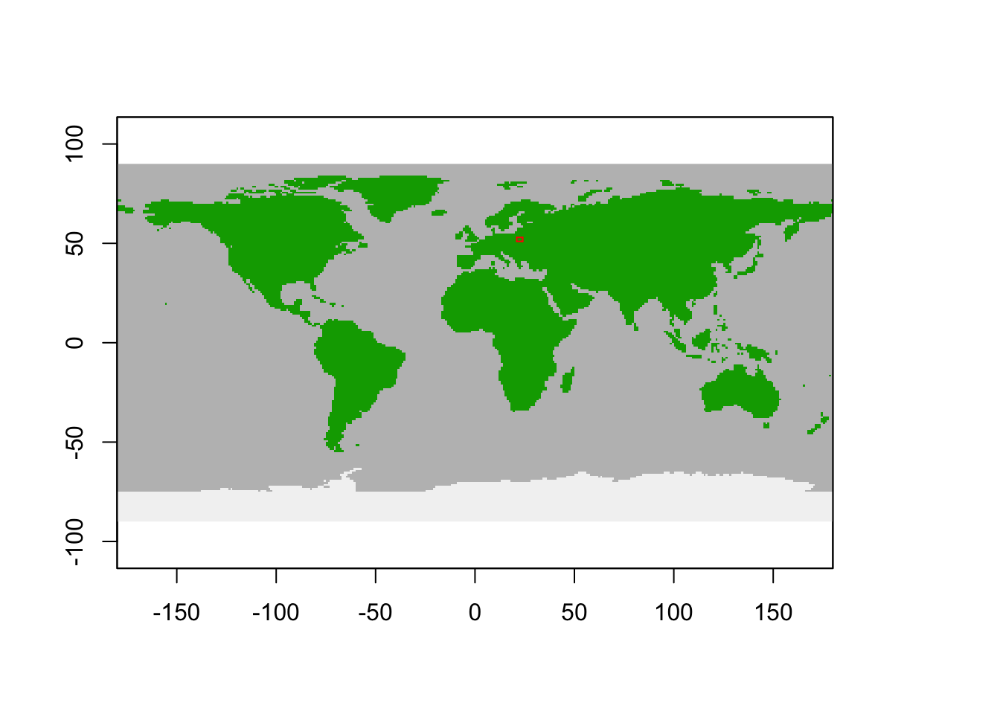
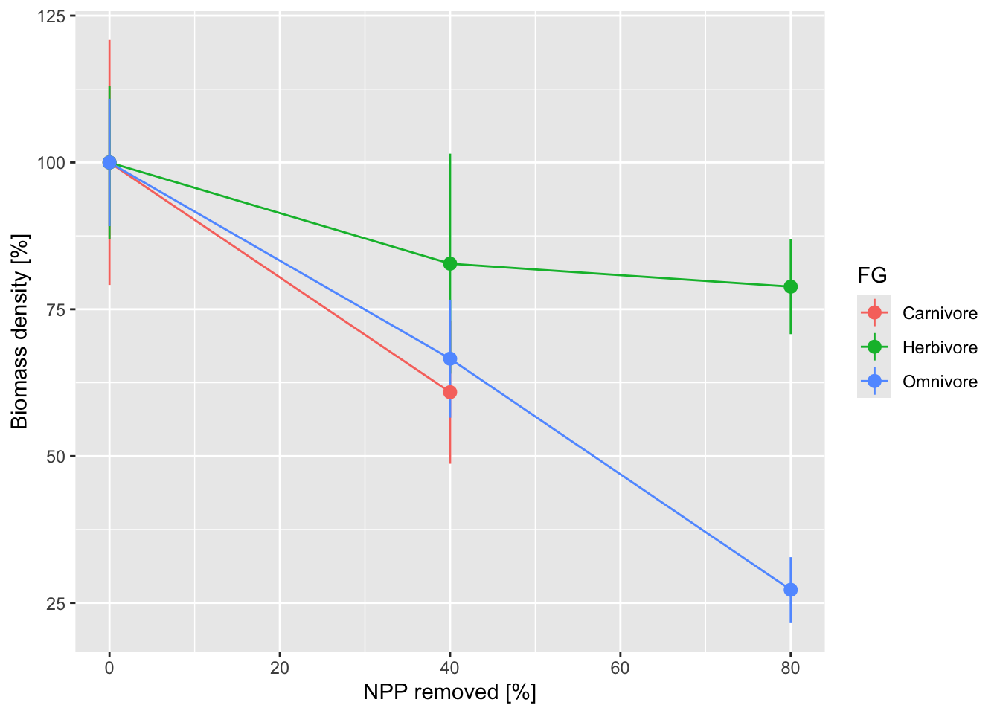

RStudio project
Open the RStudio project that we created in the first session. I recommend to use this RStudio project for the entire course and within the RStudio project create separate R scripts for each session.
# Session 12: MadingleyR, land use change effects and save
the file in your folder “scripts” within your project folder, e.g. as
“12_Mad_landuse.R”This practical implements parts of Newbold et
al. (2020) who used the mechanistic general ecosystem model
Madingley to test the effects of vegetation harvesting on ecosystem
structure. The workflow follows the example MadingleyR case
study 2 on land-use intensity provided in https://github.com/MadingleyR/MadingleyR.
Similar to Newbold et al. (2020), we
aim to simulate the effects of human influence, in particular plant
biomass removal, on ecosystem structure. Newbold
et al. (2020) defined plant biomass removal as the fraction of
net primary productivity (NPP) and used this as proxy for land use
intensity. In MadingleyR this fraction is called
HANPP which stands for human appropriation of NPP. Typical
HANPP values for Western Europe are 40% but strongly vary across land
use classes with croplands showing average HANPP values of 83% and
grazing land of 19% (Haberl et al.
2007).
Here, we chose Białowieża (Poland) as study region. We follow a
simplified protocol of Newbold et al.
(2020) and the MadingleyR case study on land-use
intensity (Hoeks et al. 2020). Ecosystem
structure and dynamics are simulated within a 3x3 grid at 1° spatial
resolution and we assume uniform plant biomass reduction in all grid
cells (rather than fragmented landscapes). First, we let the model spin
up for 50 years, and afterwards we simulate the different scenarios for
another 50 years. As simplification over Newbold
et al. (2020) and Hoeks et al.
(2020), we only simulate three different land use intensity
scenarios with HANPP values 0% (natural state), 40% and 80%. Simulations
are repeated 5 times and results are averaged. We are specifically
interested in the effect of HANPP on biomass of endotherms (herbivores,
carnivores and omnivores).
We set up a directory to store all modelling results. Use your file explorer on your machine, navigate to the “models” folder within your project, and create a sub-folder for the current practical called “Mad_landuse”. Next, return to your RStudio project and store the path in a variable. This has to be the absolute path to the models folder.
dirpath = paste0(getwd(),"/models/Mad_landuse")First, we define the spatial window for the selected location in Białowieża and initialise the model.
library(MadingleyR)
library(tidyverse)
library(ggplot2)
# Spatial window Białowieża:
sptl_bial = c(21, 24, 51, 53)
# Load default spatial inputs
sptl_inp = madingley_inputs('spatial inputs') # load default inputs## Reading default input rasters from: /Library/Frameworks/R.framework/Versions/4.2/Resources/library/MadingleyR/spatial_input_rasters.............# Initialise models for the selected location
mdat_bial = madingley_init(spatial_window = sptl_bial, spatial_inputs = sptl_inp)## Processing: realm_classification, land_mask, hanpp, available_water_capacity
## Processing: Ecto_max, Endo_C_max, Endo_H_max, Endo_O_max
## Processing: terrestrial_net_primary_productivity_1-12
## Processing: near-surface_temperature_1-12
## Processing: precipitation_1-12
## Processing: ground_frost_frequency_1-12
## Processing: diurnal_temperature_range_1-12
## # Initialised spatial window
plot_spatialwindow(mdat_bial$spatial_window)
We first let the model spin up for 50 years. Remember that this spinup phase should typically cover 100-1000 years; we shorten this for computational reasons in this demonstration.
# Run spin-up of 50 years
mres_spinup_bial = madingley_run(madingley_data = mdat_bial,
spatial_inputs = sptl_inp,
years = 50,
out_dir=dirpath)Save all model objects for later usage (such that you do not need to rerun the models for plotting).
# save model objects
save(mres_spinup_bial, file=paste0(dirpath,'/mres_landuse_bial.RData'))Next, we run scenarios for different HANPP values, assuming fractional vegetation productivity of 100%, 60% and 20% which correspond to HANPP values 0% (natural state), 40% and 80%. We will simulate 5 replicates for each scenario and average the results. First, we define some parameters and some output objects.
# Set scenario parameters
reps = 5 # set number of replicates per land-use intensity
fractional_veg_production = c(1.0, 0.6, 0.2) # accessible biomass
fg = data.frame(FG=c('Herbivore', 'Carnivore', 'Omnivore'),
FunctionalGroupIndex = 0:2) # data.frame for aggregating cohorts
stats = data.frame() # data.frame used to store individual model output statisticsNow, we automatically loop over the different fractional vegetation
covers and over the replicate runs. After each run, we calculate the
biomass of the endotherm functional groups (herbivore, carnivore,
omnivore) and store them in the stats data frame that we
just defined.
# Loop over fractional vegetation cover
for(frac_i in 1:length(fractional_veg_production)) {
# Loop over replicate runs
for(rep_i in 1:reps){
# produce some print message:
print(paste0("rep: ",rep_i," fraction veg reduced: ",fractional_veg_production[frac_i]))
# lower veg production in the hanpp spatial input layer,
# provided as fraction of vegetation productivity remaining in the system:
sptl_inp$hanpp[] = fractional_veg_production[frac_i]
mres_scen_bial = madingley_run(
years = 50,
madingley_data = mres_spinup_bial,
spatial_inputs = sptl_inp,
silenced = TRUE,
apply_hanpp = 1, # use the option of human appropriation of NPP
out_dir=dirpath
)
# Process output,
# Calculate cohort biomass:
cohorts = mres_scen_bial$cohorts
cohorts$Biomass = cohorts$CohortAbundance * cohorts$IndividualBodyMass
cohorts = cohorts %>%
filter(FunctionalGroupIndex<3) %>% # only keep endotherms
group_by(FunctionalGroupIndex) %>% # group by FunctionalGroupIndex
summarise(Biomass = sum(Biomass)) %>% # sum up biomass per functional group
right_join(fg) %>% # joint with functional group names
add_column(frac_cover=fractional_veg_production[frac_i])
stats = rbind(stats, cohorts) # attach aggregated stats
# Assign unique name to simulation:
assign(
paste0('mres_scen_bial','_frac', fractional_veg_production[frac_i],'_rep',rep_i),
mres_scen_bial)
} # end loop over replicate runs
} # end loop over fractional vegetation coverSave all model objects for later usage (such that you do not need to rerun the models for plotting).
# save model objects
save(list=c('mres_spinup_bial',grep('mres_scen_bial_',ls(),value=T),'stats'), file=paste0(dirpath,'/mres_landuse_bial.RData'))We want to make a figure similar to Fig. 1 in Newbold et al. (2020) and Fig. 7 in Hoeks et al. (2020). For this, we first calculate the mean biomass for the scenario with full vegetation cover and use this as reference. Then, we calculate relative biomass of all scenarios relative to the reference. We can then plot percentage biomass differences.
# Calculate mean biomass of endotherms for 100% vegetation
mean_biomass = stats %>%
filter(frac_cover==1) %>%
group_by(FG) %>%
summarise(mean_biomass = mean(Biomass, na.rm=T))
# Calculate relative biomass
stats$biomass_rel = NA
# relative biomass for carnivores
stats[stats$FG=='Carnivore','biomass_rel'] = stats[stats$FG=='Carnivore','Biomass'] / mean_biomass[mean_biomass$FG=='Carnivore',]$mean_biomass
# relative biomass for herbivores
stats[stats$FG=='Herbivore','biomass_rel'] = stats[stats$FG=='Herbivore','Biomass'] / mean_biomass[mean_biomass$FG=='Herbivore',]$mean_biomass
# relative biomass for omnivores
stats[stats$FG=='Omnivore','biomass_rel'] = stats[stats$FG=='Omnivore','Biomass'] / mean_biomass[mean_biomass$FG=='Omnivore',]$mean_biomass
mean_biomass_rel = stats %>%
group_by(frac_cover, FG) %>%
summarise(mean = mean(biomass_rel),sd = sd(biomass_rel))
# Plot relative biomass
ggplot(mean_biomass_rel, aes(x=(1-frac_cover)*100, y=mean*100, color=FG)) +
geom_line() +
geom_pointrange(aes(ymin=(mean-sd)*100, ymax=(mean+sd)*100)) +
xlab("NPP removed [%]") +
ylab('Biomass density [%]')
Task: extend analyses
Now, it’s your turn.